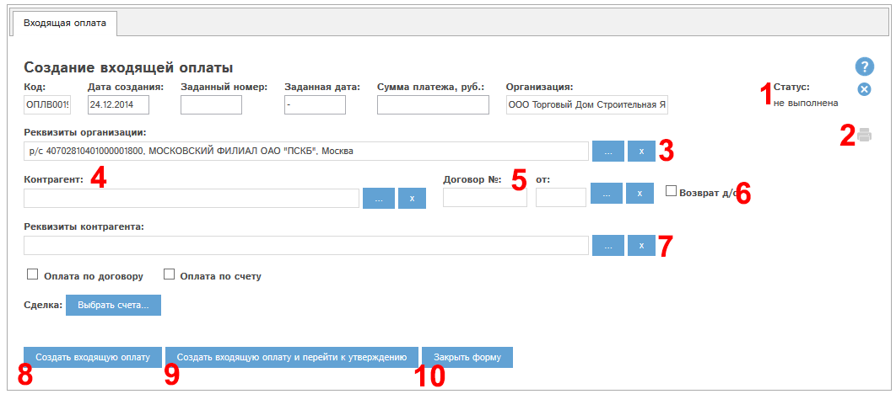
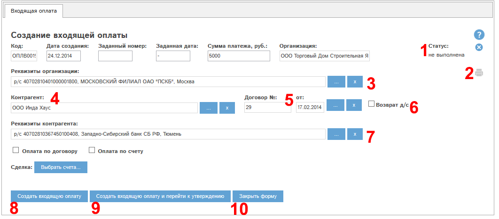

Создание входящей оплаты при наличии у Вас прав на данное действие производится с помощью кнопки «Создать входящую оплату…» в реестре входящих оплат.
Создание происходит в 2 этапа: заполнение оплаты и утверждение оплаты.
При нажатии кнопки «Создать входящую оплату…» открывается окно создания оплаты:

Рис. 5.50 Окно создания входящей оплаты
Рассмотрим поля и кнопки окна создания оплаты.
Поле «Статус» (1) у вновь создаваемой оплаты имеет значение «не выполнена».
Щелкнув по кнопке  ,
Вы можете отменить создание оплаты.
,
Вы можете отменить создание оплаты.
Кнопка «Печать» (2) позволяет распечатать оплату, в окне создания оплаты данная кнопка неактивна.
Блок «Контрагент» (4,5,7).
В этом блоке необходимо выбрать контрагента-покупателя. Выбор контрагента-покупателя полностью аналогичен выбору контрагента-покупателя при создании исходящего счета (см. Создание исходящего счета).
Блок «Реквизиты организации» (3) полностью аналогичен выбору реквизитов контрагента. По умолчанию подставлены либо основные реквизиты, либо единственные реквизиты организации.
Галочку "Возврат д/с" (6) нужно проставлять в случае, если эта входящая оплата - возврат денежных средств от контрагента-покупателя.
Выберем контрагента. Зададим сумму оплаты.
Окно создания оплаты примет вид:

Рис. 5.51 Окно создания входящей оплаты. Выбран контрагент, задана сумма оплаты.
Затем нажмем кнопку «Создать входящую оплату и перейти к утверждению». Откроется окно редактирования вновь созданной оплаты.